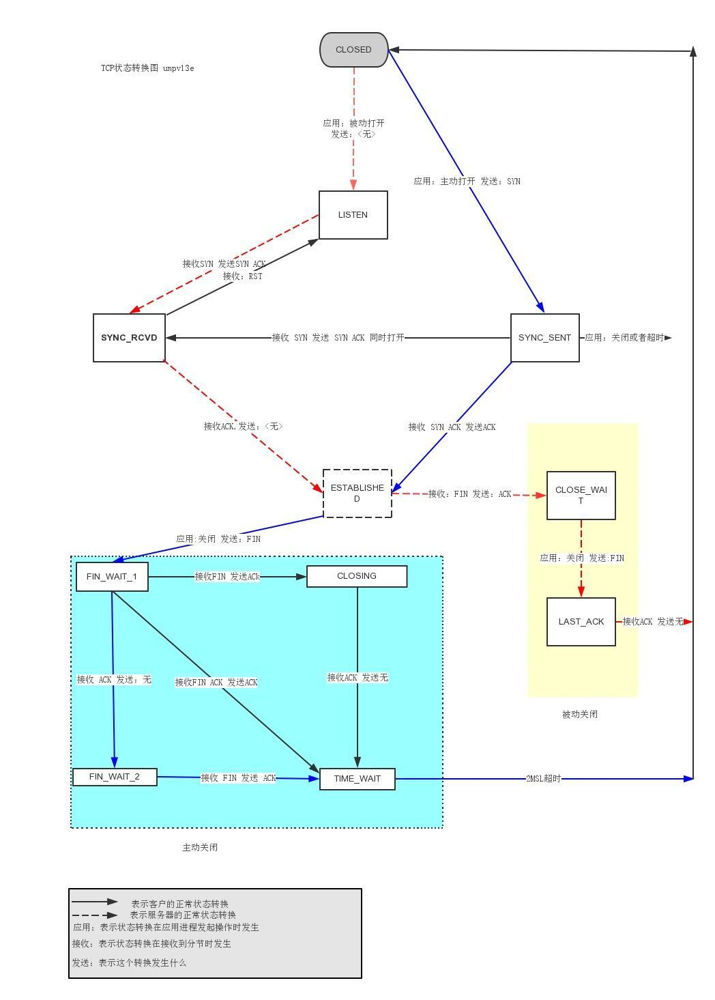

TCP通信过程三步骤：
建立TCP连接通道（三次握手）
数据传输
断开TCP连接通道（四次挥手）


三次握手各个状态解释如下：
CLOSED 起始点，在超时或者连接关闭时候进入此状态，这并不是一个真正的状态，而是这个状态图的假想起点和终点
LISTEN 服务器端等待连接的状态。服务器经过 socket，bind，listen 函数之后进入此状态，开始监听客户端发过来的连接请求。此称为应用程序被动打开（等到客户端连接请求）
SYN_SENT 第一次握手发生阶段，客户端发起连接。客户端调用 connect，发送 SYN 给服务器端，然后进入 SYN_SENT 状态，等待服务器端确认（三次握手中的第二个报文）。如果服务器端不能连接，则直接进入CLOSED状态
SYN_RCVD 第二次握手发生阶段，跟 3 对应，这里是服务器端接收到了客户端的 SYN，此时服务器由 LISTEN 进入 SYN_RCVD状态，同时服务器端回应一个 ACK，然后再发送一个 SYN 即 SYN+ACK 给客户端。还有这样一种情况，当客户端在发送 SYN 的同时也收到服务器端的 SYN请求，即两个同时发起连接请求，那么客户端就会从 SYN_SENT 转换到 SYN_REVD 状态。
ESTABLISHED 第三次握手发生阶段，客户端接收到服务器端的 ACK 包（ACK，SYN）之后，也会发送一个 ACK 确认包，客户端进入 ESTABLISHED 状态，表明客户端这边已经准备好，但TCP 需要两端都准备好才可以进行数据传输。服务器端收到客户端的 ACK 之后会从 SYN_RCVD 状态转移到 ESTABLISHED 状态，表明服务器端也准备好进行数据传输了。这样客户端和服务器端都是 ESTABLISHED 状态，就可以进行后面的数据传输了。所以 ESTABLISHED 也可以说是一个数据传送状态。
上面就是 TCP 三次握手过程的状态变迁。结合第一张三次握手过程图，从报文的角度看状态变迁：SYN_SENT 状态表示已经客户端已经发送了 SYN 报文，SYN_RCVD 状态表示服务器端已经接收到了 SYN 报文。
四次挥手各个状态解释如下：
FIN_WAIT_1 第一次挥手。主动关闭的一方（执行主动关闭的一方既可以是客户端，也可以是服务器端，这里以客户端执行主动关闭为例），终止连接时，发送 FIN 给对方，然后等待对方返回 ACK 。调用 close() 第一次挥手就进入此状态。
CLOSE_WAIT 接收到FIN 之后，被动关闭的一方进入此状态。具体动作是接收到 FIN，同时发送 ACK。之所以叫 CLOSE_WAIT 可以理解为被动关闭的一方此时正在等待上层应用程序发出关闭连接指令。前面已经说过，TCP关闭是全双工过程，这里客户端执行了主动关闭，被动方服务器端接收到FIN 后也需要调用 close 关闭，这个 CLOSE_WAIT 就是处于这个状态，等待发送 FIN，发送了FIN 则进入 LAST_ACK 状态。
FIN_WAIT_2 主动端（这里是客户端）先执行主动关闭发送FIN，然后接收到被动方返回的 ACK 后进入此状态
LAST_ACK 被动方（服务器端）发起关闭请求，由状态2 进入此状态，具体动作是发送 FIN给对方，同时在接收到ACK 时进入CLOSED状态。
CLOSING 两边同时发起关闭请求时（即主动方发送FIN，等待被动方返回ACK，同时被动方也发送了FIN，主动方接收到了FIN之后，发送ACK给被动方），主动方会由FIN_WAIT_1 进入此状态，等待被动方返回ACK
TIME_WAIT 从状态变迁图会看到，四次挥手操作最后都会经过这样一个状态然后进入CLOSED状态。共有三个状态会进入该状态
由CLOSING进入：同时发起关闭情况下，当主动端接收到ACK后，进入此状态，实际上这里的同时是这样的情况：客户端发起关闭请求，发送FIN之后等待服务器端回应ACK，但此时服务器端同时也发起关闭请求，也发送了FIN，并且被客户端先于ACK接收到（先接收到了FIN，然后接收到了ACK）。
由FIN_WAIT_1进入：发起关闭后，发送了FIN，等待ACK的时候，正好被动方（服务器端）也发起关闭请求，发送了FIN，这时客户端接收到了先前ACK，也收到了对方的FIN，然后发送ACK（对对方FIN的回应），与CLOSING进入的状态不同的是接收到FIN和ACK的先后顺序（先接收到了ACK，然后接收到FIN）。
由FIN_WAIT_2 进入，这是不同时的情况，主动方在完成自身发起的主动关闭请求后，接收到了对方发送过来的FIN，然后回应 ACK。
为什么要有**TIME_WAIT**状态？？？
从上面进入TIME_WAIT状态的三个状态动作来看（可以直接看状态变迁图）都是主动方最后回应一个ACK（CLOSING实际上前面的那个FIN_WAIT_1状态就已经回应了ACK）
情景一：
假如这个最后回应的ACK丢失了，也就是服务器端接收不到这个ACK，那么服务器将继续发送它最终的那个FIN，因此客户端必须维护状态信息（TIME_WAIT）允许它重发最后的那个ACK。
如果没有这个TIME_WAIT状态，客户端处于CLOSED状态（开头就说了CLOSED状态实际并不存在，是我们为了方便描述假想的），那么客户端将响应RST，服务器端收到后会将该RST分节解释成一个错误，也就不能实现最后的全双工关闭了（可能是主动方单方的关闭）。
所以要实现TCP全双工连接的正常终止（两方都关闭连接），必须处理终止过程中四个分节任何一个分节的丢失情况，那么主动关闭连接的主动端必须维持TIME_WAIT状态，最后一个回应ACK的是主动执行关闭的那端。从变迁图可以看出，如果没有TIME_WAIT状态，我们将没有任何机制来保证最后一个ACK能够正常到达。前面的FIN，ACK正常到达均有相应的状态对应。
情景二：
如果目前的通信双方都已经调用了 close()，都到达了CLOSED状态，没有TIME_WAIT状态时，会出现这样一种情况，现在有一个新的连接被建立起来，使用的IP地址和端口和这个先前到达了CLOSED状态的完全相同。
假定原先的连接中还有数据报残存在网络之中，这样新的连接建立以后传输的数据极有可能就是原先的连接的数据报，为了防止这一点，TCP不允许从处于TIME_WAIT状态的socket 建立一个连接。处于TIME_WAIT状态的 socket 在等待了两倍的MSL时间之后，将会转变为CLOSED状态。
这里TIME_WAIT状态持续的时间是2MSL（MSL是任何IP数据报能够在因特网中存活的最长时间），足以让这两个方向上的数据包被丢弃（最长是2MSL）。通过实施这个规则，我们就能保证每成功建立一个TCP连接时，来自该连接先前化身的老的重复分组都已经在网络中消逝了
位码,tcp标志位解释
- SYN(synchronous建立联机)
- ACK(acknowledgement 确认)
- PSH(push传送)
- FIN(finish结束)
- RST(reset重置)
- URG(urgent紧急)
- Sequence number(顺序号码)
- Acknowledge number(确认号码)